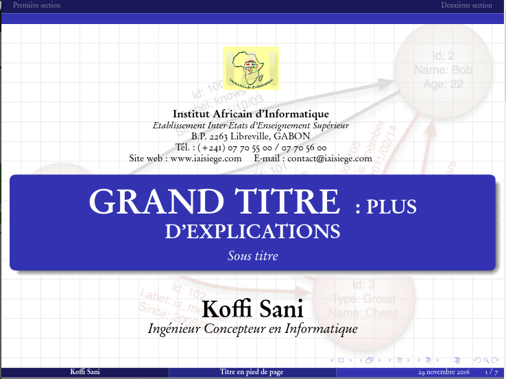

diapotex
TeX
diapositives template
Certaines fois, mettre au point des diapositives LaTeX
qui satisfassent nos besoins et attentes n'est pas aussi aisé. Je mets en place ce projet afin de permettre à plein de gens de collaborer et trouver facilement ce qu'ils veulent.
Pour plus d'aide, la communauté StackOverflow est à votre disposition.
Vous êtes les bienvenus.

Overleaf
Overleaf est un éditeur collaboratif et compilateur en temps réel de documents LaTeX
en ligne disposant de plusieurs modèles de documents réutilisables. Ce modèle y est aussi disponible. Vous pouvez le cloner et créer vos propres projets.
L'adresse est : https://www.overleaf.com/latex/templates/slide-template/wmfygctgtbcj